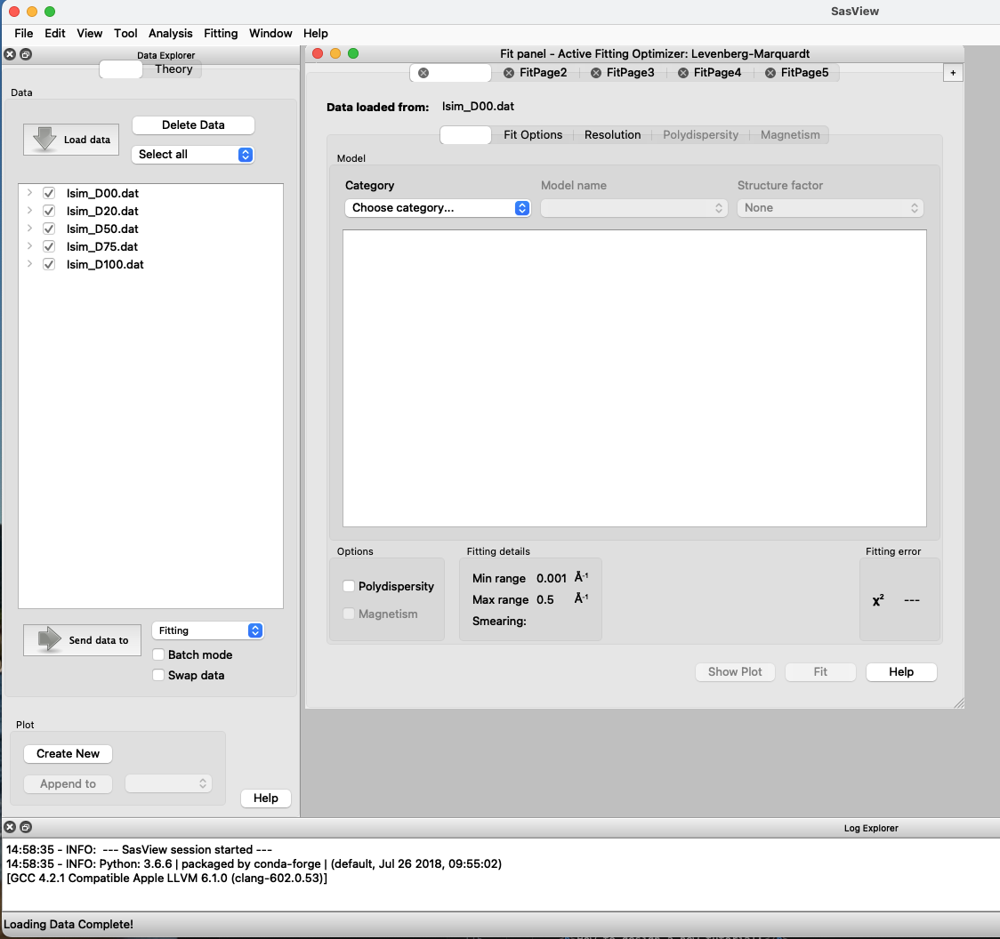
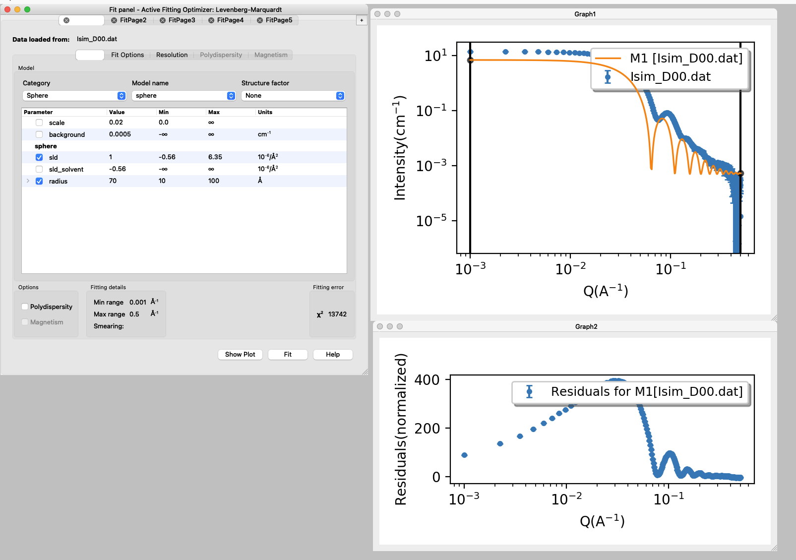
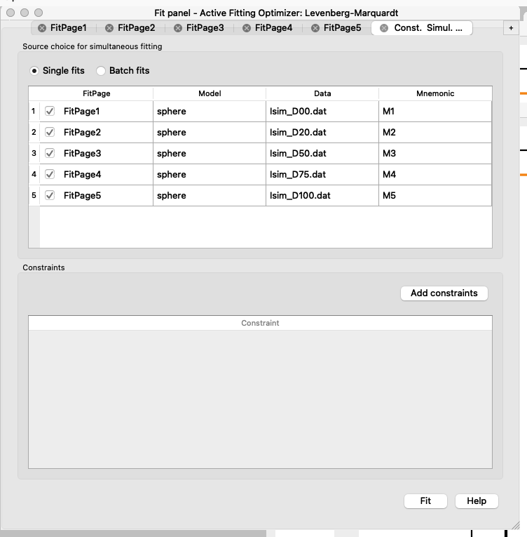
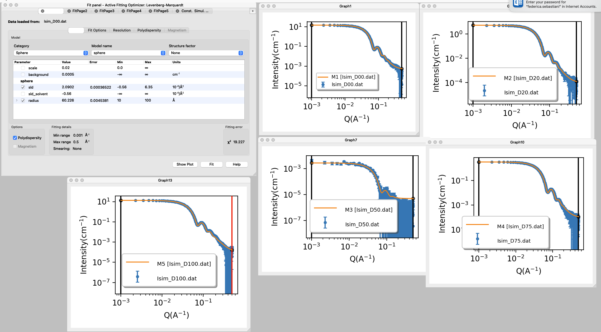
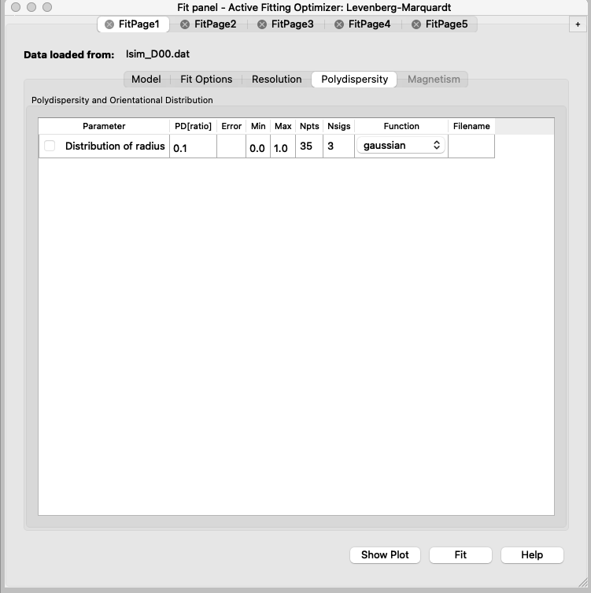
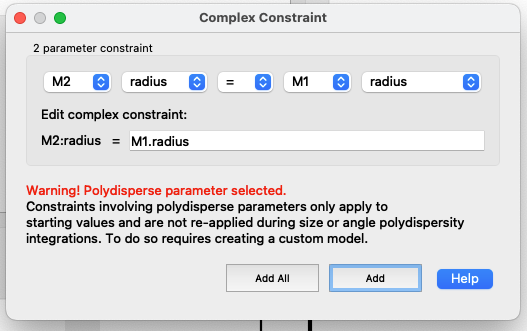

Home
Tutorial: SANS and contrast variation - simultaneous fitting
Contributors: Federica Sebastiani.

Contrast variation reduces the number of phases visible:
(left) particles in solution have 3 colours (=SLDs);
(center) particles in solution have the grey portion highlighted;
while (right) particles in solution have the light blue components visible.
Before you start
- Download and install SasView (on MacOS: you need to install Xcode first)
- Complete tutorial on SLD
- Complete tutorial on Spheres
Learning outcomes
Learn how to fit a geometrical model to a set of SANS data collected in different solvent contrasts.- Calculate SLD for a molecule with known chemical formula and molecular volume.
- Calculate SLD for solvents containing different percentage of $D_2O$.
- Set fitting constraints to perform a simultaneous fit with SasView.
- Calculate the solvent content in the particle from the fitted SLD.
Introductory remarks
The molecule taken as example for this tutorial is a dendron that self-assembles in spherical objects.
Part I: Calculate SLD of the dendron
The chemical formula for the dendron is C50H66F27N7O18.
The molecular volume estimated by All-Atom Molecular Dynamics (AAMD) simulation is 1387 Å$^3$.
- to calculate SLD you can take the scattering length ($b_i$) for each atom here
and use the formula $\text{SLD} = \dfrac{\sum_{i=1}^n b_i}{V}$.
- Calculate the % of $D_2O$ in the solvent to match-out the dendron.
Part II: Dowload datasets and calculate SLd for solvent contrasts
Dowload dataset at 0% $D_2O$
Dowload dataset at 20% $D_2O$
Dowload dataset at 50% $D_2O$
Dowload dataset at 75% $D_2O$
Dowload dataset at 100% $D_2O$
Calculate the SLD for the solvent contrasts.
Part III: Fit simultaneously SANS datasets measured with different solvent contrasts
Here you will find a step by step guide to set up the model and constraints in SasView.
The datasets provided were simulated using a scale factor of 0.02 and polydispersity (PDI) of 0.1, you will determine SLD and radius with the fitting.
- Open sasview, load datasets, send data to fitting 
- Select the model category and name: sphere
- Set the initial values for the parameters and set min and max values for the parameters that will be fitted (box ticked).
N.B.: Scale factor should not be left variable if SLD is variable too, they are strongly correlated. Read more here
Background can be adjusted manually.
SLD for the solvent is calculated and fixed.
 - Press fit.
You will see that the model has much sharper fringes than the experimental data, and that is because a PDI of 0.1 was used to simulate the data. - Repeat the fit after adding the PDI.
- You can go to FitPage2 and repeat the process from 2 to 5;
or copy the parameters from FitPage1,
change the SLD for the solvent and then fit again.
To copy parameters, go to: Edit>Copy Params in FitPage1 then go to FitPage2 and go to Edit>Paste Params
Repeat for all the contrasts.
At this point, you should have in all the FitPages the same parameters ticked. D50 may be difficult to fit, think about why! - Now you can set up the constraints to do the simultaneous fit of the datasets.
Simultaneous fit means that the dataset collected in different solvent contrasts will be fitted to the same model, i.e. the radius will be constrained to be the same across solvents, since that should not depend on the $D_2O$ content.
Go to: Fitting>Constrained or Simultaneous Fit
A new tab will appear.
Press “Add constraints”
Once all the radii are constrained to the same radius, you can check in the FitPages that the parameter name is in italic for all except the FitPage used as a constraint.
In the example we picked FitPage1, it is good to pick a dataset with good signal
 - Go back to the “Const. Simul. …” tab and press “Fit”
Since the radius is constrained, you will get a value that is common to all the FitPages, while the SLD for the sphere is different for each solvent contrast.
 - Plot SLD of the sphere vs SLD of the solvent and fit a line to the data.
- From the slope and the intercept of the fitted line, you will be able to determine the hydration (i.e. solvent content, $vf_{solv}$) in the sphere and the SLD of the “dry sphere”.
$SLD_{wet}=SLD_{dry}\cdot (1-vf_{solv})+SLD_{solv} \cdot vf_{solv}$




Challenges
- If you expect to have a core-shell sphere with distinct SLD for shell and core compartments, and you need to design a SANS experiment:
what is the minimum number of solvent contrasts to consider?
what is the rationale to decide the % of $D_2O$ for the solvent contrasts?
Perspectives
Examples of SANS and contrast variation in literature:
- Successful reprogramming of cellular protein production through mRNA delivered by functionalized lipid nanoparticles
- Bilayer Thickness Mismatch Controls Domain Size in Model Membranes
- Apolipoprotein E Binding Drives Structural and Compositional Rearrangement of mRNA-Containing Lipid Nanoparticles
Feedback
Help us improve the tutorials by- Reporting issues and bugs via our GitHub page. This could be typos, dead links etc., but also insufficient information or unclear instructions.
- Suggesting new tutorials/additions/improvements in the SAStutorials forum.
- Posting or answering questions in the SAStutorials forum.